为了介绍 model 层联动带来的代码可维护性效果，我们从标注的 geometry 更新为例说明。标注的 geometry 会依赖 Dimension.curve 以及 Dimension.textPosition 的影响，而 Dimension.textPosition 依赖 Dimension.curve ，Dimension.curve 依赖 Dimension.refNodes 的值，为了简单起见暂时不考虑其他复杂的情况。
绘制一下标注属性的依赖图：
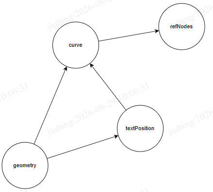
case1: refNodes 发生了变化
setRefNodes(refNodes: RefNode[]) {
this.refNodes = refNodes;
this.updateCurve();
this.updateTextPosition();
this.updateGeometry();
}
case2: 用户手动拖动了 Curve
setCurve(curve) {
this.curve = curve;
this.updateTextPosition();
this.updateGeometry();
}
case3: 用户手动拖动了文字位置
setTextPosition(textPos) {
this.textPosition = textPos;
this.updateGeometry();
}
可以看到每次当用户设置了 refNodes、textPosition 和 curve 都需要手动维护 geometry 以及其他相关更新，手动维护的依赖越复杂越容易出错。
当同时设置了 curve 和 textPos，你可能会这么做，直接调用现有的方法：
setCurve(curve);
setTextPosition(textPos);
或者另起炉灶，单独设置：
setCurveAndTextPos(cruve, textPosition) {
this.curve = curve;
this.textPosition = textPosition;
this.computeGeometry();
}
无论哪种代码都不是最佳实践，如果有了联动框架后，上面的代码会变成：
setRefNodes(refNodes: RefNode[]) {
this.refNodes = refNodes;
// this.updateCurve();
// this.updateTextPosition();
// this.updateGeometry();
}
setCurve(curve) {
this.curve = curve;
// this.updateTextPosition();
// this.updateGeometry();
}
setTextPosition(textPos) {
this.textPosition = textPos;
// this.updateGeometry();
}
我们更新属性时，不需要关心后续的更新，后续的更新会由联动框架自动触发，这与 model 到 view 层的联动有点类似，当 mode 层数据发生了变化，会自动执行对应的 mode 转 viewModel 的方法，用以更新 view 层数据。
有了联动框架后，当更新一个属性后，能够自动触发后续链路的更新。不必手动触发后续更新。
考虑以下场景，有四个属性 ABCD，它们的依赖关系如图，当 A 更新后，会触发 B 和 C 的更新，C 更新会触发 D 的更新。
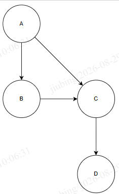
（依赖方向与箭头相反，箭头从被依赖方指向依赖方）
有了 Regen 的自驱动更新，当更新了 A 后，会自动执行以下两个链路：
会发现，其中 C 和 D 更新了两遍，造成了一些不必要的更新，这与我们手动更新过程类似，当同时调用 setCurve 和 setTextPosition 方法时，因为这两个方法内部都调用了 computeGeometry，所以出现了 computeGeometry 的重复调用，实际上我们只需要在 curve 和 textPostion 更新完成之后，执行一次 computeGeometry 即可。
所以 Regen 的第二个作用是性能优化，regen 会对依赖图（DAG）进行拓扑排序，构建执行链，从触发单元依次向下执行。
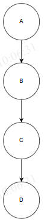
执行顺序：A → B → C → D。
所以 Regen 不仅能够自动触发依赖链路的执行，还能够避免链路的重复更新，减少计算提升性能。
Regen 就是将需要执行的属性变更逻辑，构建成一个 DAG 图，然后再进行拓扑排序，再根据结果按序执行。
DAG 图中的每个节点由三部分组成：至少一个输入（依赖）、一个输出和一个计算逻辑。
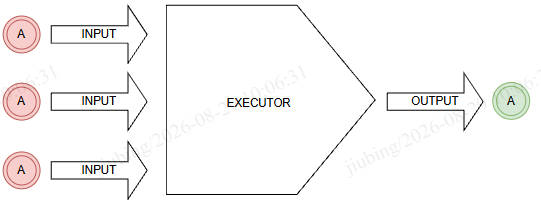
将这个节点称之为 RegenStep，RegenStep 的输入和输出称为 Atom，下面会详细介绍。
执行链上的一个计算单元，每个 RegenStep 由三部分组成：INPUT、OUTPUT、EXECUTOR。
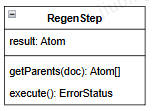
构建 DAG 图并进行排序的关键是确定 RegenStep 之间的依赖关系，我们想要知道 regenStep1 是否依赖 RegenStep2，当 RegenStep2 执行了之后，RegenStep1 是否需要执行？
可以根据下面的逻辑确定，判断 regenStep1 的 parents（输入）是否包含 regenStep2 的 result。
if (regenStep1.getParents().some(atom => regenStep2.result.isEqual(atom))) {
console.log('regenStep1 依赖 regenStep2');
} else {
console.log('regenStep1 不依赖 regenStep2');
}
Regen 框架中的原子数据，是数据单元，是判定 RegenStep 依赖关系的关键信息，是联动框架进行拓扑排序的依据。
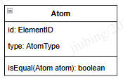
Atom 也可以携带一些额外的数据，为了描述算法，暂时先不考虑。所以可以认为 Atom 通过 id 和 type 唯一标识。
id: Atom 的 id，一般就是 Atom 所属的 element 的 id，能够通过 id 索引到对应的 element。type: Atom 的类型，一般与 Element 上某个属性关联，是一个字符串类型的类型标识符。isEqual: 判定两个 Atom 是否相等例如我们可以为标注的 curve 创建一个 Atom，这个 Atom 会作为构建 DAG 并生成执行链的判断依赖关系的基准。
new Atom(dim.id, AtomType.DimensionCurve)
假设有如下 Step 依赖关系图，箭头由被依赖方指向依赖方，下图中当 A 更新时会触发 B 和 C 的更新。
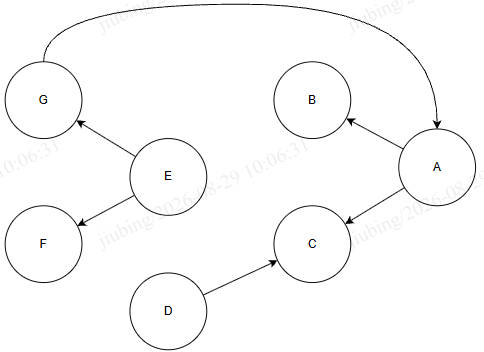
当 E 更新时，按照箭头的指向，会继而蔓延到 F、G、A、B、C。
下图展示了当各 RegenStep 分别作为 Regen 起始点（Regen Start Node，或者说 Regen 触发点），框架构建的 DAG 图以及拓扑排序后的结果执行链。
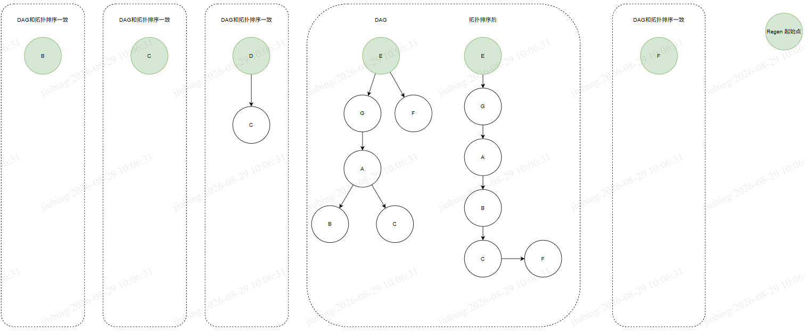
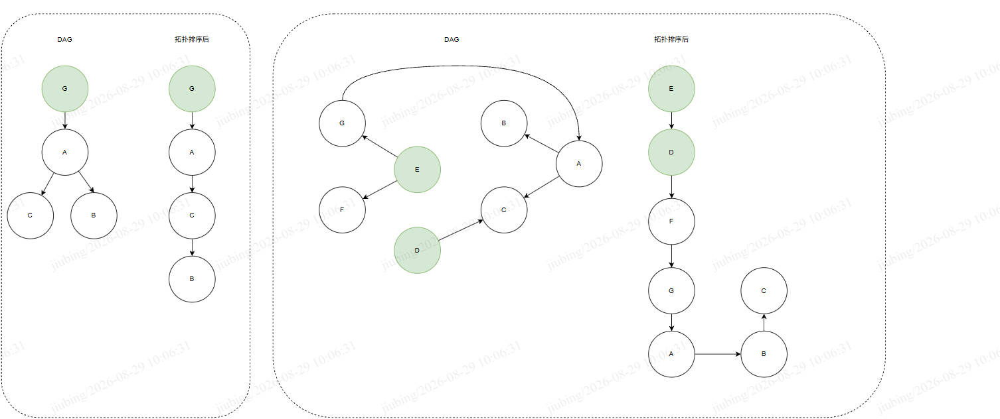
一次 Regen 算法的逻辑总结：
Regen 起始点不一定必须是 RegenStep，它也可以是 Atom，这个 Atom 我们定义为 TouchedAtom。所以在进行 Regeneration 时， Regeneration 的输入是当前项目中所有定义的 RegenStep 和 一组 TouchedAtom。
算法能够进行的一个前提条件是图节点必须是有向无环的，如果构建的图不满足有向无环图，那么无法进行拓扑排序，生成最终的 Regen 链。
举个图纸里面的例子。立面视图、立面索引符号和立面 CropViewMarker 的关系，立面视图的 ViewPort3d、立面索引的范围框以及立面视图 CropViewMarker 的范围，它们是互相影响的。立面 ViewPort3d 会影响立面视图的显示内容 elements。
不考虑数据结构是否合理的情况下，它们的依赖关系如图。
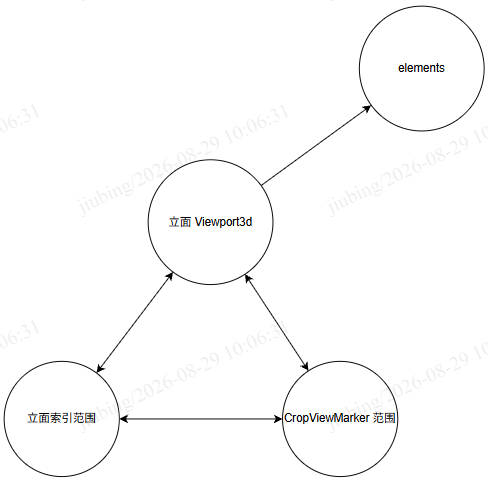
这张图不是一个有向无环图，所以无法用 Regen 算法处理。如果在不更新数据结构的情况下，只能通过手动维护它们之间的更新逻辑。
但是这里的数据结构本身存在一个问题，立面索引范围和CropViewMarker 范围实际就是立面 ViewPort3d 在某一个方向上的投影，三维转二维化。所以立面索引范围和 CropViewMarker 范围就是立面 ViewPort3d 的一个表现，它应该属于一个计算属性 getter。
// 立面视图范围
viewPort3d: Obb3d;
// 立面索引范围
get cropBox() {
return getCropBoxFromViewport3d();
}
// 立面 CropViewMarker 范围
get cropViewMarkerRegion() {
return getCropViewMarkerRegeion();
}
或者说 cropBox 和 cropViewMarekrRegion 自身不应该具备更新能力，只能够由 ViewPort3d 驱动。那么上面的有向无环图就转变成了一个有向无环图，再进行拓扑排序即可。
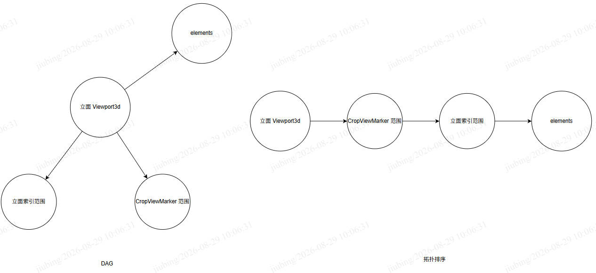
（完）